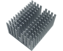
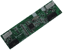

PARTS / COMPONENTS AND DESCRIPTIONS
Each components on the xbox
motherboard has a unique identification number that looks similar to
R6D1 or C8F4. Each designation starts with a letter which let's you
know what type of part it is such as R for Resistor or C for capacitor.
To make component lookup easier, the boards have a grid system with
columns (1-8 along the bottom), and rows (A-G on top and M-V on
bottom).
First look at the digit after the first letter, this is the column,
the letter after that is the row. Finally there will be one last number
to specify which component it is (ie. if there are 3 resistors in the
same area this number specifies which one it is).
This pinheader is commonly used when installing a modchip. It is
soldered into the LPC port on the motherboard for the optimal modchip
connection.

This is the video connector that is soldered on to the motherboard near
the video encoder chip (conexant, focus or xcalibur).
Resistors are devices that impede the flow of energy.
Transistors are devices that amplify, oscillate and control the flow
of energy.

Diodes are devices which allow electricity to flow in one
direction, and does this by haveing one end highly resistive while the
other is low.
Capacitors are devices that store electrical charges, and can be used
to maintain voltage levels in power.
Inductors are components that increase impedance as the frequency of
AC (Alternating Current) decreases. Typically these components are
found in power supplies, however, the xbox has a couple on its
motherboard.
The ICS1893AF microchip allows the eithernet port to communicate with
the MCPX chip and provides the networking functions for the system.
The Focus video encoder is one of three encoders used on the Xbox
motherboard. The Focus brand was introduced after the Conexant, and can
be found mostly in 1.4 motherboards.
The Conexant video encoder is one of the three encoders used on the
Xbox motherboard. The Conexant brand was used in the early motherboard
versions from 1.0-1.3, but, depending on which assembly factory you may
still find the Conexant chip on 1.4 models.
The Excalibur video encoder is one of the three encoders used on the
Xbox motherboard. The Excalibur brand is used in the 1.6 motherboard
version.
V1.0 TSOP - This is for version 1.0 and early version 1.1
motherboards. It is a 1MB chip and is flashable. Four banks of
256k can be flashed and accessed. OE Bios is in all 4 banks from
factory.

V1.2 TSOP - This is for later version 1.1 and 1.2-1.4
motherboards. It is a 256K Chip and is flashable.

For version 1.6+ boards, the TSOP was replaced with the Xyclops chip.
The
Xyclops stores the system bios, and it can't be flashed or altered.
The PIC16LC63A microcontroller is responsible for handling the Xbox's
power such as powering the unit on, sending the eject signal to the DVD
drive, and powering down/resetting the unit.
This is the 64MB of ram for the Xbox. They are soldered directly to the
Mainboard.

This is the Serial EEPROM. It contains vital information for Xbox
operation. It is write-back enabled.
Xbox CPU - 733Mhz/133Mhz FFB - Modified PIII Cpu.
Xbox GPU - 233 MHz
custom-designed X-Chip, developed by Microsoft and nVidia. This
is to the left of thr CPU and has a heatsink. Do not confuse this chip
with the MCPX as shown below.
'
The MCPX chip is based
off of the MCP chip from NVIDIA and is an APU (Audio Processing Unit) as well as a
communications processor which handles the USB, ATA (ATA100), network,
LPC, Keyboards, mice and more. It is a modified, made for Xbox, version
of the NVIDIA's MCP chip.
'
Original Xbox HDD - Seagate 10GB w/rubber vibration damper. Found
in V1.0 Xbox and some later. models.
Original Xbox HDD - Seagate 10GB slim model. Found in V1.3 and
later revision Xbox.
Original Xbox HDD - Western Digital 8GB. Placed in many different
version Xboxs.
Thompson DVD Drive -TGM600, was initial release drive for V1.0
Xbox. Is now a cheap replacement drive, the least expensive of
the four used in Xbox.
Samsung DVD Drive - Second drive used in Xbox. The Xbox Samsung DVD
drive, SD-605, is the best DVD drive you can use out
of the four types of Xbox drives. These drives can read almost all
types of CD/DVD media including CD-rw/DVD-r/DVD-rw/DVD+r/DVD+rw.
It is the most expensive replacement drive.
This is the Phillips DVD drive, VAD6011. Also a favorable
drive, as it can read numerous types of disks including
CD-RW/DVD-r/DVD-rw/DVD+r/DVD+rw. Not as expensive as the Samsung.
Found in the Halo Edition Xbox, and others.
This is the Hitachi drive, GDR-8050L. it can read numerous types
of disks including CD-RW/DVD-r/DVD-rw/DVD+r/DVD+rw. Costs less
than the Philips drive.
AD6011
Yellow propreietary 10pin DVD cable - contains power, audio, and eject
signals.
Standard IDE cable shipped with the Xbox.
ATA100/133 Upgrade Cable. Can speed up load times of games and
levels from 31 seconds to 23 seconds. This cable basically reduces
errors on the IDE bus that cause resending of data (which in turn slows
data
Xfers due to retransmits), by each data line having a
seperate ground.
The CPU Heatsink allows the xbox processor from overheating and burning
up. When used properly with the heatsink clip, and thermal grease, the
lifespan of your xbox will be extended.
This is for the first version (1.0) motherboards that have a fan
mounted on top of the heatsink. The fan was removed from later
V1.1 and all other motherboard revisions.

This is for the later version 1.1 and 1.2+ boards using the larger gpu
heatsink without the fan.

The USB daughterboards are used in the 1.0 version motherboards and
connect the controller ports to interface with the
mainboard. The reason the 1.0 version was the only
one to use this board was because of a problem within the MCPX in the
first version boards. Later with the release of the 1.1 board the
problem was fixed and allowed the controller ports to plug directly
into the motherboard.
These are the USB controller ports. They plug into the
daugherboard on V1.0 Xbox, and in to the mainboard on V1.1+ versions.
This is a power
supply unit (PSU). There are three different PSUs. Version
1.0/1 PSU's have a single row of 12 pins to connect it to the
motherboard. Version 1.2+ PSU's have an ATX style connector
which has two rows of ten connectors to connect it to the
motherboard. Version 1.6 PSU's have an ATX style connector
which has two rows of ten connectors to connect it to the
motherboard. They are al
mainboard specific, and can't be interchanged.
This is the HDD/DVD drive catrier(s). There are two, they
interlock together. Almost any IDE drive will fasten to the HDD
side. Xbox DVd drives are specially made to slide into the DVD
carrier.
This is the DVD tray door piece. It will fit on any direct
replacement DVD drive. May not fit modified drives.
Standard RCA Composit A/C Cable
Original power cable.
Original Xbox controller.
Scontroller (Small controller) - repalced in V1.5 and later revision
Xbox bundles/retail box.
Xbox case Torx screws. One under each pad, and one under each
sticker.
Xbox Jewel (Logo).

XBox! All the above stuff is either inside, pluged in, snapped
in, or screwed into this unit!